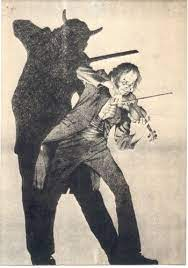

paganini y sus mujeres

Tuvo muchas amantes, entre ellas Elisa y Paulina, hermanas de Napoleón Bonaparte; pero finalmente se casó con la bailarina Antonia Bianchi, con quien se fue a vivir y tuvo un hijo: Aquiles. La gente veía a Paganini como un avaricioso que sólo le importaba el dinero y gastarlo en sus caprichos, pero con el paso del tiempo cambió su ideal del dinero. La gente no hacía saber que subvencionó la carrera de un joven músico y que no dudaba en prestar algo de dinero a quien le hiciera falta, como a Berlioz, a quien acababa de conocer. Le dio un cheque por valor de veinte mil francos, para ayudarle a salir de su penuria económica